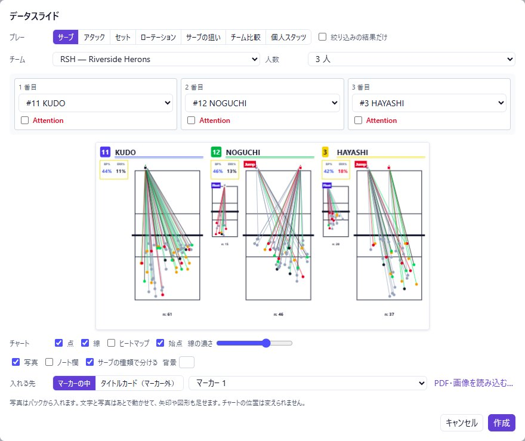
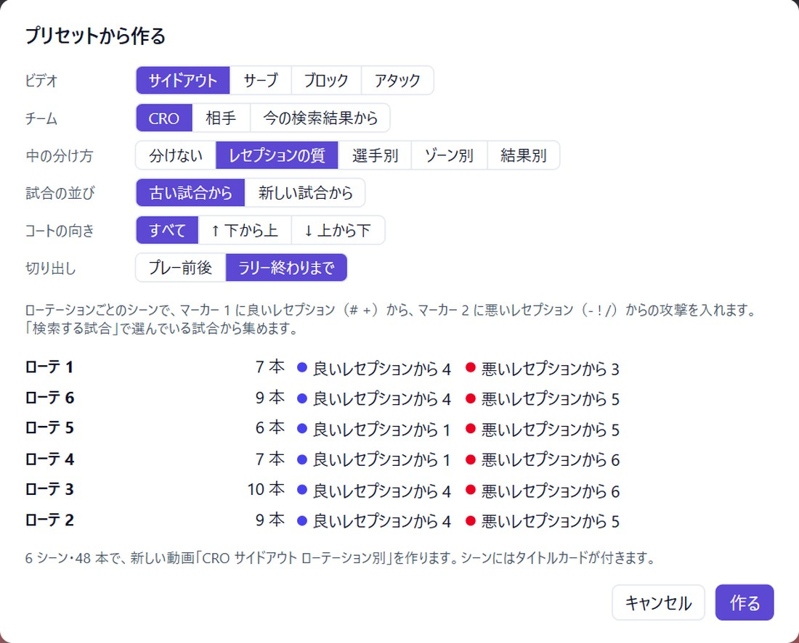
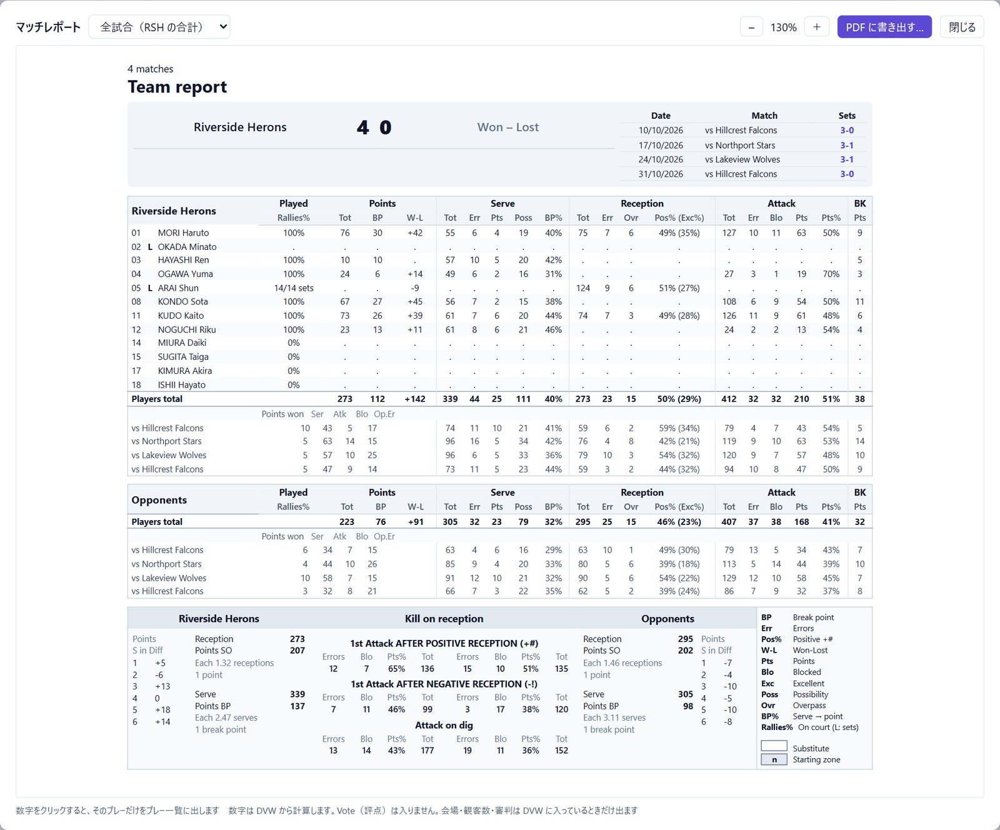
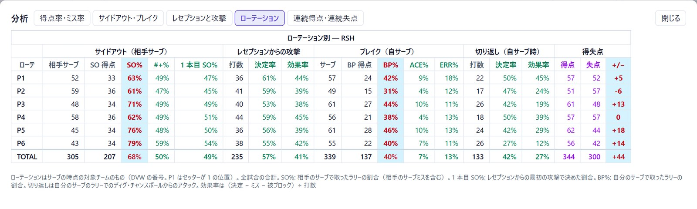

8. データスライドとレポート
動画だけでなく、数字の資料もプロジェクトの試合から作れます。データスライドは動画の中に入れられ、PNG・PDF・PowerPoint にも書き出せます。
データスライド
上のデータスライド作成を押し、種類とチーム、選手を選んで作成を押します。できたスライドは、選んだマーカーの中か、シーンの頭のタイトルカードとして入ります。

| 種類 | 中身 |
|---|---|
| サーブ・アタック | 選手ごとのコースのチャートと、ブレイク率・ミス率・決定率などです。 |
| セット | レセプションの質とセッターコールごとの、トスの行き先の割合です。ローテーション別のサイドアウトにもできます。 |
| ローテーション | ローテーションごとに 1 枚。フォーメーション、主なアタッカーのコーン、攻撃の割合の表です。 |
| サーブの狙い | 受けた選手とサーブの入ったゾーンごとの、良いパスの率とレセプション後の決定率です。 |
| チーム比較 | 2 つのプロジェクトのチームを、サイドアウト・ブレイク・アタック・サーブ・レセプションなどで並べます。並べる数字は選べます。 |
| 個人スタッツ | 選手ごとのサーブ・アタック・レセプションの基本の数字の表です。 |


写真は、選手写真のパック（右下の選手写真）から入ります。スライドの文字や写真はあとから動かせ、矢印や図形も足せます。
プリセットから作る

上のプリセットから作るで、決まった型の動画をまとめて作れます。サイドアウト、サーブ、ブロック、アタックから選び、ローテーション別・選手別・ゾーン別・結果別などの分け方を選ぶと、シーンとマーカーに分かれた新しい動画ができます。試合が増えたら作り直すで、同じ型のまま作り直せます。
マッチレポート

上のマッチレポートで、1 試合か全試合の合計を A4 1 枚のレポートにします。選手ごとの得点・サーブ・レセプション・アタックと、チームの合計が並びます。数字を押すと、そのプレーだけがプレー一覧に出ます。PDF でも保存できます。
分析

上の分析で、対象チームの数字を表で見られます。得点率・ミス率、サイドアウト・ブレイク、レセプションと攻撃、ローテーション、連続得点・連続失点のタブがあります。